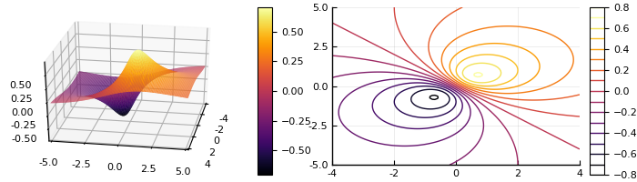

Unconstrained Optimization¶
In this lecture we consider unconstrained optimization given by
where f:\R^n \rightarrow \R and \set{S}\subset \R^n. In the course, we will primarily consider minimization problems. This is because a maximizer of f(\vx) is the minimzer of -f(\vx).
Optimality¶
A point \vx^*\in \set{S} is a
- global minimizer of f if f(\vx^*) \leq f(\vx) for all \vx\in \mS
- global maximizer of f if f(\vx^*) \geq f(\vx) for all \vx\in \mS
- local minimizer of f if f(\vx^*) \leq f(\vx) for all \vx\in \mS where \|\vx-\vx^*\|_2 \leq\epsilon
- local maximizer of f if f(\vx^*) \geq f(\vx) for all \vx\in \mS where \|\vx-\vx^*\|_2 \leq\epsilon
for some \epsilon > 0. A maximizer (or minimizer) \vx^* of \eqref{unconstrained_prob} is a strict maximizer (or minimizer) if for all points in a neighborhood of \vx^*, the objective f(x) does not attain the value of f(\vx^{*}). Equivalently, this definition of strict maximizer/minimizer in the global case can be stated as: \vx^* is a strict global min or max if for all \vx\in \set{S}, we have f(\vx^*) = f(\vx) if and only if \vx = \vx^*.
The above figure shows that even if the optimality is attained, the optimal point may not be unique. There are cases when the optimal point is not attained or even exist. An example of these cases are shown below
\exa{1} Consider the minimization program
The figure below shows the interaction bewtween the objective fuction and set \{(x,y):x^2 + y^2 \leq 2\}. The pink lines are the "level sets" and the arrows are directions of descent. The optimal point is \bmat -1\\ -1 \emat.
\exa{2} Consider the minimization program
The surface and contour plots of f(x,y) are
using Plots; pyplot() f(x,y) = (x+y)/(x^2+y^2+1) x = range(-4,stop=4,length=100) y = range(-5,stop=5,length = 100) pyplot(size=(700,200)) plot(plot(x,y,f,st=:surface,camera=(100,30)), plot(x,y,f,st=:contour,camera=(100,30)))

The global minimizer is \begin{pmatrix} \frac{1}{\sqrt{2}},& \frac{1}{\sqrt{2}} \end{pmatrix} and the global maximizer is \bmatp -\frac{1}{\sqrt{2}}, & -\frac{1}{\sqrt{2}} \ematp.
Sufficient conditions in 1-d¶
We will first look at 1-d function f:\R→\R and state sufficent conditions for optimality of a point \vx in the interrior of the set \set{S}. Consider the following 1-d function
The critial points of f in the above figure are x \in \{ b ,\ c,\ d,\ e\} and these points satisfy f'(x) =0. We may be able to use second derivative information to determine if these critial points are minimizer or maximizer. Precisely, for any function f:\R\rightarrow\R, a point x = x^* is
-
a local minimizer if f'(x) = 0 and f''(x)>0, and
-
a local maximizer if f'(x) = 0 and f''(x)<0.
However, if both f'(x) = 0 and f''(x)=0, there is not enough information to draw any conclusion. As an example, consider f(x) = x^3 and f(x) = x^4. For both function, f'(x) = 0 and f''(x) = 0, however x = 0 is saddle point of x^3 and x = 0 is a minimizer of x^4.
A proof of the sufficient condition of optimality follows directly from Taylor approximation of the function f(x). Consider the case where f'(x^*) = 0 and f''(x^*)>0 for some x^*\in\set{S}. Then by Taylor's theorem of f(x) at x = x^*, we get
for x close to x^*. So f(x) > f(x^*) for all x near x^*, which imples x^* is local minimizer. Similarly, we can prove f(x^*)=0 and f''(x^*)<0 implies x^* is a local maximizer. In the next section we will generalize these sufficient condition for any real valued function f:\R^n \rightarrow \R.
Gradient, Hessian and directional derivatives¶
For a differentiable function f:\R^n\to\R, the gradient of f at \vx is a vector in \R^n. The gradient of f at \vx contain the partial derivative of f at x and is given by
Similarly, the Hessian of f at x is a symmetric matrix in \R^{n\times n} that contain second partial derivative information and is given by
For example, for a function f(x) = x_1^2 + 8x_1x_2 - 2x_3^3, its gradiet is \nabla f(x) = \bmat 2x_1 + 8x_2\\8x_1\\-6x_3^2\emat, and its Hessian is \nabla^2 f(x) = \bmat 2 & 8 & 0 \\ 8 & 0 & 0 \\ 0 & 0 & -12x_3\emat.
Next, we look at directional derivatives. For a differentiable function f:\R^n\to \R, the directional derivative in the direction of \vd \in \R^n is
We say a f function is flat at \vx^* if f'(\vx) = 0. In terms of directional derivative, f'(\vx) = 0 is equivalent to the directional derivative of f equaling zero for all directions \vd\in \R^n, i.e.
Similarly, for a twice-differentiable function f:\R^n\to \Re, the directional second derivative is
The second directional deriviate f''(\vx;\vd) provides curvature information of f at a point \vx along the direction \vd. This can be used to characterize convex functions. Recall that a function is convex if for all \vx,\vy in its domain, and all 0\leq \theta \leq 1, we have
Equivalently, a function is convex if its directional second derivative is positive for all directions d\in \R^n, i.e.
Sufficient conditions of optimality¶
We will state optimality conditions for the following minimization program
where f : \R^n\to\R is a real valued function. We say a point \vx^*\in \set{S} is
-
a minimizer of f(\vx) if \nabla f(\vx^*) = 0 and \vd^T\nabla^2 f(\vx^*) \vd > 0 for all \vd\in \R^n. Note that a square symmetrix matrix \mA \in \R^{n\times n}, like the Hessian matrix, is positive definite if \vz\trans\mA\vz >0 for all \vz \in \R^n (denoted by \mA \succ 0).
-
a maximizer of f(\vx) if \nabla f(\vx^*) = 0 and \vd^T\nabla^2 f(\vx^*) \vd < 0 for all \vd\in \R^n. In this case, \nabla^2 f(\vx^*) is
called a negative definite matrix and is denoted by \mA \prec 0.
Lastly, if \nabla f(\vx^*) = 0 and \nabla^2 f(x^*) is indefinite, i.e. neither positive nor negative definite, then \vx^* is a saddle point. When \nabla^2 f(x^*) is indefinite then there exits directions where the 1-d slices of the function f are convex and concave.